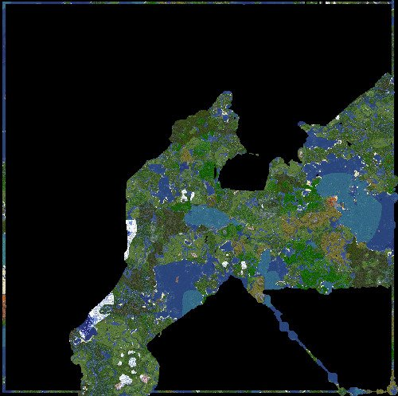

Survival
Survival, the main gamemode, is a (mostly) rules-free open world. After entering the Survival Entrance portal in the Hub, you will arrive at spawn.
The spawn area is a 3×3 un-removable platform stretching down to bedrock. There is also a 3×3×3 protected cube around the spawn location where you can't break or place blocks, to prevent instant trapping.
The map has a world border radius of 6,000 blocks. Here is a map of some of the generated terrain:

The world contains several chunk errors, mainly around the spawn area. These were caused by the way the world was originally set up. If a reset ever happens, these will be fixed.
Rules
| Rule | Status |
|---|---|
| Griefing, stealing, and PVP | ✔ Allowed |
| X-ray (anti-X-ray is active, reducing its effectiveness) | ✔ Allowed |
| Hack clients, mods, and AFK spoofers | ✘ Not Allowed |
Commands
Here are some survival-related commands (all of them are also listed on the Commands page):
/warp Survival— teleports you to survival (same as entering the portal)/msg— private messaging (Master rank)/trash— opens a disposal chest to destroy items (Veteran rank)
Extra Info
- All normal vanilla features are functional.
- Spawn has a bedrock pole pointing west to make trapping harder.
- The terrain map above will be kept updated.
- There is no economy system.
- Survival has a warp — use
/warp Survivalto get there instantly.